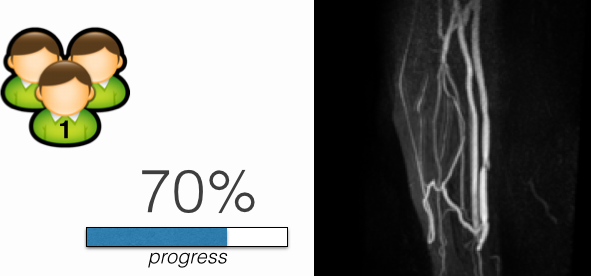
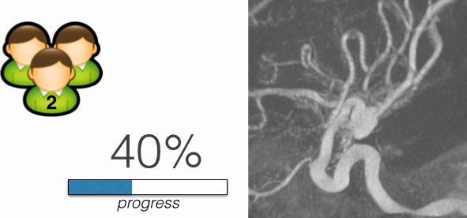
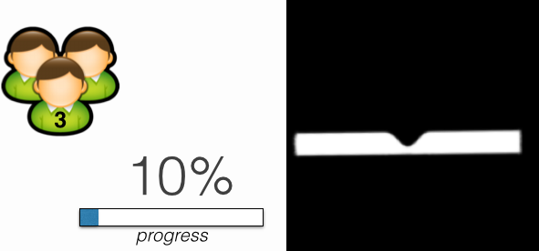
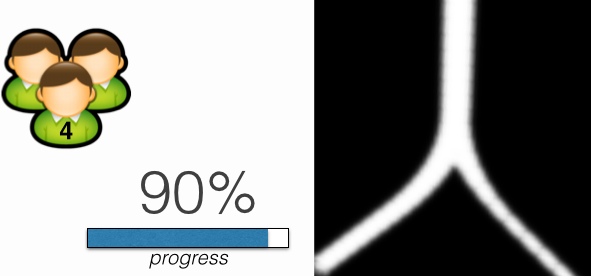

vmtkAcademy
The first interactive teaching tool for image-based modeling
Created by Orobix Srl
Available July 2014
A teaching resource for image-based modeling
Wouldn't it be great to integrate a "hands-on" teaching tool for education in image based modeling?
vmtkAcademy is a cloud-based system that brings advanced modeling to the classroom, from medical images all the way to simulation.
Nothing to install and nothing to download, all you need is a web-browser.
Manage your classroom and assign use cases
Group 1: Arm vasculature
Group 2: Cerebral Aneurysm
Group 3: Ideal model: stenosis
Group 4: Ideal model: bifurcation
Check the progress of your students
Group 2 - Cerebral aneurysm use case
DICOM series exploration and volume of interest selection
completed 100%
level set segmentation
completed 100%
Isosurface extraction
completed 70%
Centerline generation
completed 0%
{kind=link}
{kind=link}
{kind=link}
Level set segmentation
voronoi diagram
flow extensions
mesh generation
isosurface extraction
{kind=link}
{kind=link}
{kind=link}
{kind=link}
{kind=link}
{kind=link}
{kind=link}